Success comes in many ways and forms. What's interesting is that most successful people have very similar qualities.When I read lists such as this one, I want to see how I stack up against it. It feels good when I recognize the qualities of success in myself. For the qualities that I don't have, lists like these tell me what I need to work on.
| 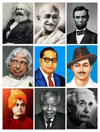 | |
| Img.1 | Img.2 |
If you want to achieve your life's dream and be wildly successful, you need to model yourself after people who are living their dream. The more qualities you have in common, the higher your chances for being wildly successful.
Mother Teresa was born Agnes Gonxha Bojaxhiu in Skopje*, Macedonia, on August 26**, 1910. Her family was of Albanian descent. At the age of twelve, she felt strongly the call of God. She knew she had to be a missionary to spread the love of Christ. At the age of eighteen she left her parental home in Skopje and joined the Sisters of Loreto, an Irish community of nuns with missions in India. After a few months’ training in Dublin she was sent to India, where on May 24, 1931, she took her initial vows as a nun
| 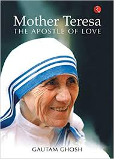 | 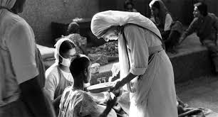 | 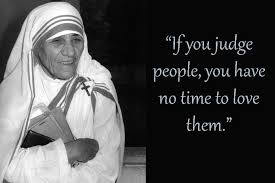 |
| Img.1 | Img.2 | Img.3 |
From 1931 to 1948 Mother Teresa taught at St. Mary’s High School in Calcutta, but the suffering and poverty she glimpsed outside the convent walls made such a deep impression on her that in 1948 she received permission from her superiors to leave the convent school and devote herself to working among the poorest of the poor in the slums of Calcutta. Although she had no funds, she depended on Divine Providence, and started an open-air school for slum children. Soon she was joined by voluntary helpers, and financial support was also forthcoming. This made it possible for her to extend the scope of her work.
A.P.J. Abdul Kalam, in full Avul Pakir Jainulabdeen Abdul Kalam, (born October 15, 1931, Rameswaram, India—died July 27, 2015, Shillong), Indian scientist and politician who played a leading role in the development of India’s missile and nuclear weapons programs. He was president of India from 2002 to 2007.
| 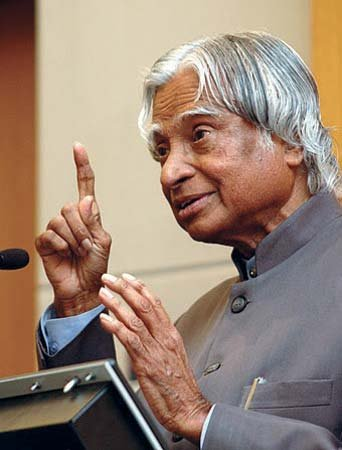 | 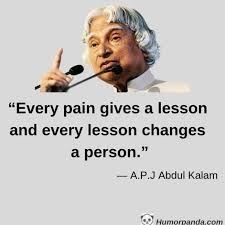 | |
| Img.1 | Img.2 | Img.3 |
Kalam earned a degree in aeronautical engineering from the Madras Institute of Technology and in 1958 joined the Defence Research and Development Organisation (DRDO). He soon moved to the Indian Space Research Organisation, where he was project director of the SLV-III, India’s first indigenously designed and produced satellite launch vehicle. Rejoining DRDO in 1982, Kalam planned the program that produced a number of successful missiles, which helped earned him the nickname “Missile Man.”
Kiran Bedi (born 9 June 1949) is a retired Indian Police Service officer, social activist, former tennis player and politician who is the current Lieutenant Governor of Puducherry. She is the first female Indian Police Service officer and started her service in 1972.[3] She remained in service for 35 years before taking voluntary retirement in 2007 as Director General, Bureau of Police Research and Development
| 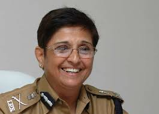 | 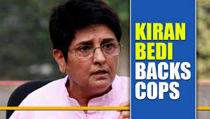 | 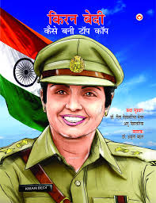 |
| Img.1 | Img.2 | Img.3 |
Inspired by her father, Bedi started playing tennis at the age of nine. As a teenage tennis player, she cut her hair short as they interfered with her game. In 1964, she played her first tournament outside Amritsar, participating in the national junior lawn tennis championship at Delhi Gymkhana. She lost in early rounds, but won the trophy two years later, in 1966. As the national champion, she was eligible for entry to the Wimbledon junior championship, but was not nominated by the Indian administration.
Rabindranath Tagore (1861-1941) was the youngest son of Debendranath Tagore, a leader of the Brahmo Samaj, which was a new religious sect in nineteenth-century Bengal and which attempted a revival of the ultimate monistic basis of Hinduism as laid down in the Upanishads. He was educated at home; and although at seventeen he was sent to England for formal schooling, he did not finish his studies there.
| 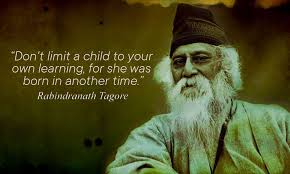 | 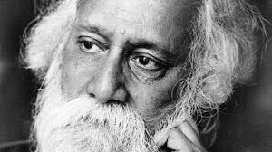 | 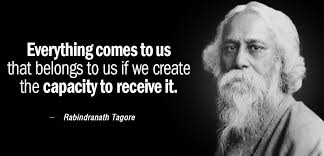 |
| Img.1 | Img.2 | Img.3 |
In his mature years, in addition to his many-sided literary activities, he managed the family estates, a project which brought him into close touch with common humanity and increased his interest in social reforms. He also started an experimental school at Shantiniketan where he tried his Upanishadic ideals of education. From time to time he participated in the Indian nationalist movement, though in his own non-sentimental and visionary way; and Gandhi, the political father of modern India, was his devoted friend. Tagore was knighted by the ruling British Government in 1915, but within a few years he resigned the honour as a protest against British policies in India.